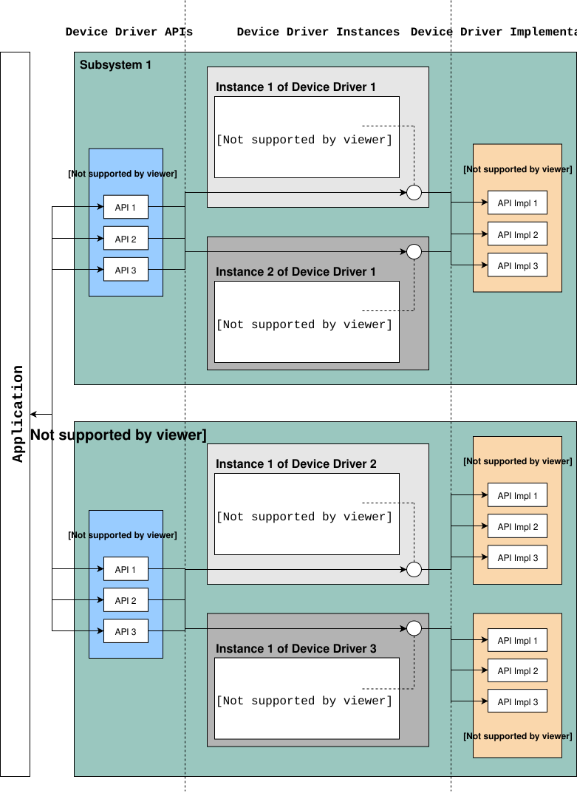

Device Driver Model
Introduction
The Zephyr kernel supports a variety of device drivers. Whether a driver is available depends on the board and the driver.
The Zephyr device model provides a consistent device model for configuring the drivers that are part of a system. The device model is responsible for initializing all the drivers configured into the system.
Each type of driver (e.g. UART, SPI, I2C) is supported by a generic type API.
In this model the driver fills in the pointer to the structure containing the function pointers to its API functions during driver initialization. These structures are placed into the RAM section in initialization level order.
{kind=link}

Standard Drivers
Device drivers which are present on all supported board configurations are listed below.
Interrupt controller: This device driver is used by the kernel’s interrupt management subsystem.
Timer: This device driver is used by the kernel’s system clock and hardware clock subsystem.
Serial communication: This device driver is used by the kernel’s system console subsystem.
Entropy: This device driver provides a source of entropy numbers for the random number generator subsystem.
Important
Use the random API functions for random values. Entropy functions should not be directly used as a random number generator source as some hardware implementations are designed to be an entropy seed source for random number generators and will not provide cryptographically secure random number streams.
Synchronous Calls
Zephyr provides a set of device drivers for multiple boards. Each driver should support an interrupt-based implementation, rather than polling, unless the specific hardware does not provide any interrupt.
High-level calls accessed through device-specific APIs, such as
i2c.h or spi.h, are usually intended as synchronous. Thus,
these calls should be blocking.
Driver APIs
The following APIs for device drivers are provided by device.h. The APIs
are intended for use in device drivers only and should not be used in
applications.
DEVICE_DEFINE()Create device object and related data structures including setting it up for boot-time initialization.
DEVICE_NAME_GET()Converts a device identifier to the global identifier for a device object.
DEVICE_GET()Obtain a pointer to a device object by name.
DEVICE_DECLARE()Declare a device object. Use this when you need a forward reference to a device that has not yet been defined.
DEVICE_API()Wrap a driver API declaration to assign it to its respective linker section.
Driver Data Structures
The device initialization macros populate some data structures at build time which are split into read-only and runtime-mutable parts. At a high level we have:
struct device {
const char *name;
const void *config;
const void *api;
void * const data;
};
The config member is for read-only configuration data set at build time. For
example, base memory mapped IO addresses, IRQ line numbers, or other fixed
physical characteristics of the device. This is the config pointer
passed to DEVICE_DEFINE() and related macros.
The data struct is kept in RAM, and is used by the driver for
per-instance runtime housekeeping. For example, it may contain reference counts,
semaphores, scratch buffers, etc.
The api struct maps generic subsystem APIs to the device-specific
implementations in the driver. It is typically read-only and populated at
build time. The next section describes this in more detail.
Subsystems and API Structures
Most drivers will be implementing a device-independent subsystem API. Applications can simply program to that generic API, and application code is not specific to any particular driver implementation.
If all driver API instances are assigned to their respective API linker section
use DEVICE_API_IS() to verify the API’s type.
A subsystem API definition typically looks like this:
typedef int (*subsystem_do_this_t)(const struct device *dev, int foo, int bar);
typedef void (*subsystem_do_that_t)(const struct device *dev, void *baz);
__subsystem struct subsystem_driver_api {
subsystem_do_this_t do_this;
subsystem_do_that_t do_that;
};
static inline int subsystem_do_this(const struct device *dev, int foo, int bar)
{
return DEVICE_API_GET(subsystem, dev)->do_this(dev, foo, bar);
}
static inline void subsystem_do_that(const struct device *dev, void *baz)
{
DEVICE_API_GET(subsystem, dev)->do_that(dev, baz);
}
A driver implementing a particular subsystem will define the real implementation
of these APIs, and populate an instance of subsystem_driver_api structure using
the DEVICE_API() wrapper:
static int my_driver_do_this(const struct device *dev, int foo, int bar)
{
...
}
static void my_driver_do_that(const struct device *dev, void *baz)
{
...
}
static DEVICE_API(subsystem, my_driver_api_funcs) = {
.do_this = my_driver_do_this,
.do_that = my_driver_do_that,
};
The driver would then pass my_driver_api_funcs as the api argument to
DEVICE_DEFINE().
Note
Since pointers to the API functions are referenced in the api
struct, they will always be included in the binary even if unused;
gc-sections linker option will always see at least one reference to
them. Providing for link-time size optimizations with driver APIs in
most cases requires that the optional feature be controlled by a
Kconfig option.
Device-Specific API Extensions
Some devices can be cast as an instance of a driver subsystem such as GPIO, but provide additional functionality that cannot be exposed through the standard API. These devices combine subsystem operations with device-specific APIs, described in a device-specific header.
A device-specific API definition typically looks like this:
#include <zephyr/drivers/subsystem.h>
/* When extensions need not be invoked from user mode threads */
int specific_do_that(const struct device *dev, int foo);
/* When extensions must be invokable from user mode threads */
__syscall int specific_from_user(const struct device *dev, int bar);
/* Only needed when extensions include syscalls */
#include <zephyr/syscalls/specific.h>
A driver implementing extensions to the subsystem will define the real implementation of both the subsystem API and the specific APIs:
static int generic_do_this(const struct device *dev, void *arg)
{
...
}
static struct generic_api api {
...
.do_this = generic_do_this,
...
};
/* supervisor-only API is globally visible */
int specific_do_that(const struct device *dev, int foo)
{
...
}
/* syscall API passes through a translation */
int z_impl_specific_from_user(const struct device *dev, int bar)
{
...
}
#ifdef CONFIG_USERSPACE
#include <zephyr/internal/syscall_handler.h>
int z_vrfy_specific_from_user(const struct device *dev, int bar)
{
K_OOPS(K_SYSCALL_SPECIFIC_DRIVER(dev, K_OBJ_DRIVER_GENERIC, &api));
return z_impl_specific_do_that(dev, bar)
}
#include <zephyr/syscalls/specific_from_user_mrsh.c>
#endif /* CONFIG_USERSPACE */
Applications use the device through both the subsystem and specific APIs.
Single Driver, Multiple Instances
Some drivers may be instantiated multiple times in a given system. For example
there can be multiple GPIO banks, or multiple UARTS. Each instance of the driver
will have a different config struct and data struct.
Configuring interrupts for multiple drivers instances is a special case. If each
instance needs to configure a different interrupt line, this can be accomplished
through the use of per-instance configuration functions, since the parameters
to IRQ_CONNECT() need to be resolvable at build time.
For example, let’s say we need to configure two instances of my_driver, each
with a different interrupt line. In drivers/subsystem/subsystem_my_driver.h:
typedef void (*my_driver_config_irq_t)(const struct device *dev);
struct my_driver_config {
DEVICE_MMIO_ROM;
my_driver_config_irq_t config_func;
};
In the implementation of the common init function:
void my_driver_isr(const struct device *dev)
{
/* Handle interrupt */
...
}
int my_driver_init(const struct device *dev)
{
const struct my_driver_config *config = dev->config;
DEVICE_MMIO_MAP(dev, K_MEM_CACHE_NONE);
/* Do other initialization stuff */
...
config->config_func(dev);
return 0;
}
Then when the particular instance is declared:
#if CONFIG_MY_DRIVER_0
DEVICE_DECLARE(my_driver_0);
static void my_driver_config_irq_0(const struct device *dev)
{
IRQ_CONNECT(MY_DRIVER_0_IRQ, MY_DRIVER_0_PRI, my_driver_isr,
DEVICE_GET(my_driver_0), MY_DRIVER_0_FLAGS);
}
const static struct my_driver_config my_driver_config_0 = {
DEVICE_MMIO_ROM_INIT(DT_DRV_INST(0)),
.config_func = my_driver_config_irq_0
}
static struct my_data_0;
DEVICE_DEFINE(my_driver_0, MY_DRIVER_0_NAME, my_driver_init,
NULL, &my_data_0, &my_driver_config_0,
POST_KERNEL, MY_DRIVER_0_PRIORITY, &my_api_funcs);
#endif /* CONFIG_MY_DRIVER_0 */
Note the use of DEVICE_DECLARE() to avoid a circular dependency on providing
the IRQ handler argument and the definition of the device itself.
Initialization Levels
Drivers may depend on other drivers being initialized first, or require
the use of kernel services. DEVICE_DEFINE() and related APIs
allow the user to specify at what time during the boot sequence the init
function will be executed. Any driver will specify one of three
initialization levels:
PRE_KERNEL_1Used for devices that have no dependencies, such as those that rely solely on hardware present in the processor/SOC. These devices cannot use any kernel services during configuration, since the kernel services are not yet available. The interrupt subsystem will be configured however so it’s OK to set up interrupts. Init functions at this level run on the interrupt stack.
PRE_KERNEL_2Used for devices that rely on the initialization of devices initialized as part of the
PRE_KERNEL_1level. These devices cannot use any kernel services during configuration, since the kernel services are not yet available. Init functions at this level run on the interrupt stack.POST_KERNELUsed for devices that require kernel services during configuration. Init functions at this level run in context of the kernel main task.
Within each initialization level you may specify a priority level, relative to
other devices in the same initialization level. The priority level is specified
as an integer value in the range 0 to 999; lower values indicate earlier
initialization. The priority level must be a decimal integer literal without
leading zeroes or sign (e.g. 32), or an equivalent symbolic name (e.g.
\#define MY_INIT_PRIO 32); symbolic expressions are not permitted (e.g.
CONFIG_KERNEL_INIT_PRIORITY_DEFAULT + 5).
Drivers and other system utilities can determine whether startup is
still in pre-kernel states by using the k_is_pre_kernel()
function.
Deferred initialization
Initialization of devices can also be deferred to a later time. In this case,
the device is not automatically initialized by Zephyr at boot time. Instead,
the device is initialized when the application calls device_init().
To defer a device driver initialization, add the property zephyr,deferred-init
to the associated device node in the DTS file. For example:
/ {
a-driver@40000000 {
reg = <0x40000000 0x1000>;
zephyr,deferred-init;
};
};
System Drivers
In some cases you may just need to run a function at boot. For such cases, the
SYS_INIT can be used. This macro does not take any config or runtime
data structures and there isn’t a way to later get a device pointer by name. The
same device policies for initialization level and priority apply.
Inspecting the initialization sequence
Device drivers declared with DEVICE_DEFINE (or any variations of it)
and SYS_INIT are processed at boot time and the corresponding
initialization functions are called sequentially according to their specified
level and priority.
Sometimes it’s useful to inspect the final sequence of initialization function
call as produced by the linker. To do that, use the initlevels CMake
target, for example west build -t initlevels.
Error handling
In general, it’s best to use __ASSERT() macros instead of
propagating return values unless the failure is expected to occur
during the normal course of operation (such as a storage device
full). Bad parameters, programming errors, consistency checks,
pathological/unrecoverable failures, etc., should be handled by
assertions.
When it is appropriate to return error conditions for the caller to
check, 0 should be returned on success and a POSIX errno.h code
returned on failure. See
https://github.com/zephyrproject-rtos/zephyr/wiki/Naming-Conventions#return-codes
for details about this.
Memory Mapping
On some systems, the linear address of peripheral memory-mapped I/O (MMIO) regions cannot be known at build time:
The I/O ranges must be probed at runtime from the bus, such as with PCI express
A memory management unit (MMU) is active, and the physical address of the MMIO range must be mapped into the page tables at some virtual memory location determined by the kernel.
These systems must maintain storage for the MMIO range within RAM and establish the mapping within the driver’s init function. Other systems do not care about this and can use MMIO physical addresses directly from DTS and do not need any RAM-based storage for it.
For drivers that may need to deal with this situation, a set of
APIs under the DEVICE_MMIO scope are defined, along with a mapping function
device_map().
Device Model Drivers with one MMIO region
The simplest case is for drivers which need to maintain one MMIO region.
These drivers will need to use the DEVICE_MMIO_ROM and
DEVICE_MMIO_RAM macros in the definitions for their config_info
and driver_data structures, with initialization of the config_info
from DTS using DEVICE_MMIO_ROM_INIT. A call to DEVICE_MMIO_MAP()
is made within the init function:
struct my_driver_config {
DEVICE_MMIO_ROM; /* Must be first */
...
}
struct my_driver_dev_data {
DEVICE_MMIO_RAM; /* Must be first */
...
}
const static struct my_driver_config my_driver_config_0 = {
DEVICE_MMIO_ROM_INIT(DT_DRV_INST(...)),
...
}
int my_driver_init(const struct device *dev)
{
...
DEVICE_MMIO_MAP(dev, K_MEM_CACHE_NONE);
...
}
int my_driver_some_function(const struct device *dev)
{
...
/* Write some data to the MMIO region */
sys_write32(0xDEADBEEF, DEVICE_MMIO_GET(dev));
...
}
The particular expansion of these macros depends on configuration. On
a device with no MMU or PCI-e, DEVICE_MMIO_MAP and
DEVICE_MMIO_RAM expand to nothing.
Device Model Drivers with multiple MMIO regions
Some drivers may have multiple MMIO regions. In addition, some drivers
may already be implementing a form of inheritance which requires some other
data to be placed first in the config_info and driver_data
structures.
This can be managed with the DEVICE_MMIO_NAMED variant macros. These
require that DEV_CFG() and DEV_DATA() macros be defined to obtain
a properly typed pointer to the driver’s config_info or dev_data structs.
For example:
struct my_driver_config {
...
DEVICE_MMIO_NAMED_ROM(corge);
DEVICE_MMIO_NAMED_ROM(grault);
...
}
struct my_driver_dev_data {
...
DEVICE_MMIO_NAMED_RAM(corge);
DEVICE_MMIO_NAMED_RAM(grault);
...
}
#define DEV_CFG(_dev) \
((const struct my_driver_config *)((_dev)->config))
#define DEV_DATA(_dev) \
((struct my_driver_dev_data *)((_dev)->data))
const static struct my_driver_config my_driver_config_0 = {
...
DEVICE_MMIO_NAMED_ROM_INIT(corge, DT_DRV_INST(...)),
DEVICE_MMIO_NAMED_ROM_INIT(grault, DT_DRV_INST(...)),
...
}
int my_driver_init(const struct device *dev)
{
...
DEVICE_MMIO_NAMED_MAP(dev, corge, K_MEM_CACHE_NONE);
DEVICE_MMIO_NAMED_MAP(dev, grault, K_MEM_CACHE_NONE);
...
}
int my_driver_some_function(const struct device *dev)
{
...
/* Write some data to the MMIO regions */
sys_write32(0xDEADBEEF, DEVICE_MMIO_GET(dev, grault));
sys_write32(0xF0CCAC1A, DEVICE_MMIO_GET(dev, corge));
...
}
Device Model Drivers with multiple MMIO regions in the same DT node
Some drivers may have multiple MMIO regions defined into the same DT device
node using the reg-names property to differentiate them, for example:
/dts-v1/;
/ {
a-driver@40000000 {
reg = <0x40000000 0x1000>,
<0x40001000 0x1000>;
reg-names = "corge", "grault";
};
};
This can be managed as seen in the previous section but this time using the
DEVICE_MMIO_NAMED_ROM_INIT_BY_NAME macro instead. So the only difference
would be in the driver config struct:
const static struct my_driver_config my_driver_config_0 = {
...
DEVICE_MMIO_NAMED_ROM_INIT_BY_NAME(corge, DT_DRV_INST(...)),
DEVICE_MMIO_NAMED_ROM_INIT_BY_NAME(grault, DT_DRV_INST(...)),
...
}
Drivers that do not use Zephyr Device Model
Some drivers or driver-like code may not use Zephyr’s device model, and alternative storage must be arranged for the MMIO data. An example of this are timer drivers, or interrupt controller code.
This can be managed with the DEVICE_MMIO_TOPLEVEL set of macros,
for example:
DEVICE_MMIO_TOPLEVEL_STATIC(my_regs, DT_DRV_INST(..));
void some_init_code(...)
{
...
DEVICE_MMIO_TOPLEVEL_MAP(my_regs, K_MEM_CACHE_NONE);
...
}
void some_function(...)
...
sys_write32(DEVICE_MMIO_TOPLEVEL_GET(my_regs), 0xDEADBEEF);
...
}
Drivers that do not use DTS
Some drivers may not obtain the MMIO physical address from DTS, such as
is the case with PCI-E. In this case the device_map() function
may be used directly:
void some_init_code(...)
{
...
struct pcie_bar mbar;
bool bar_found = pcie_get_mbar(bdf, index, &mbar);
device_map(DEVICE_MMIO_RAM_PTR(dev), mbar.phys_addr, mbar.size, K_MEM_CACHE_NONE);
...
}
For these cases, DEVICE_MMIO_ROM directives may be omitted.